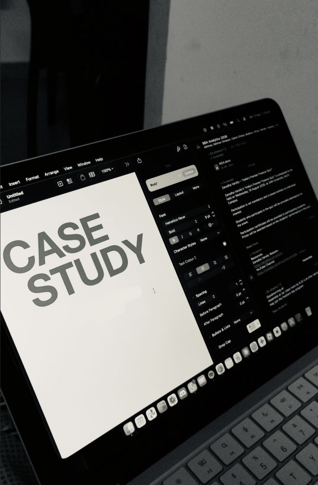
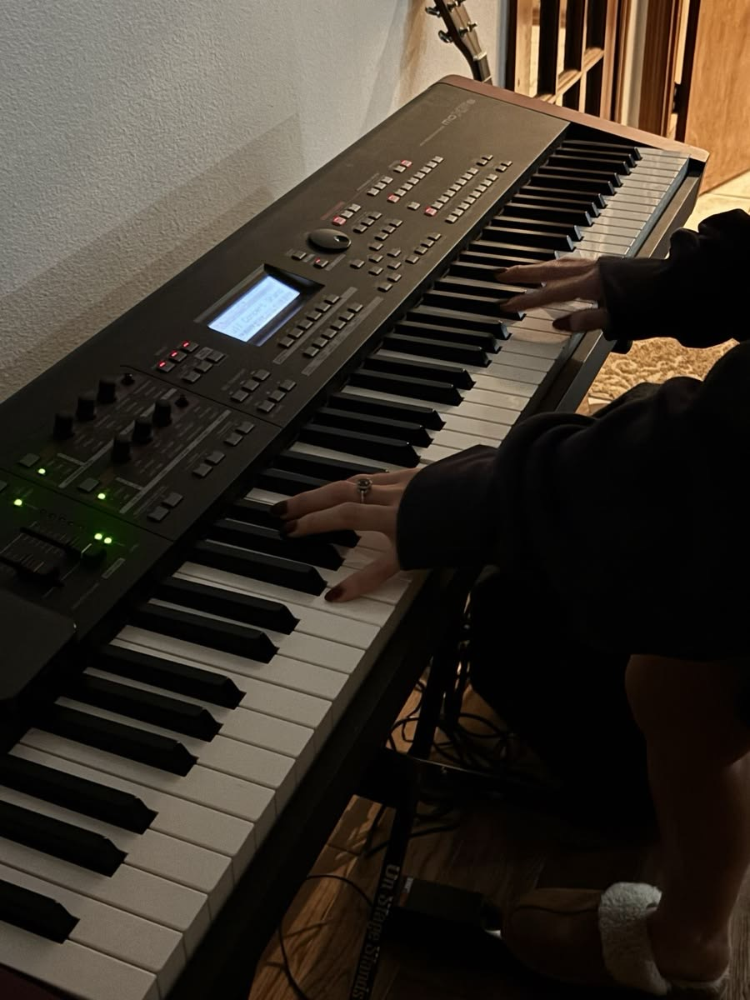
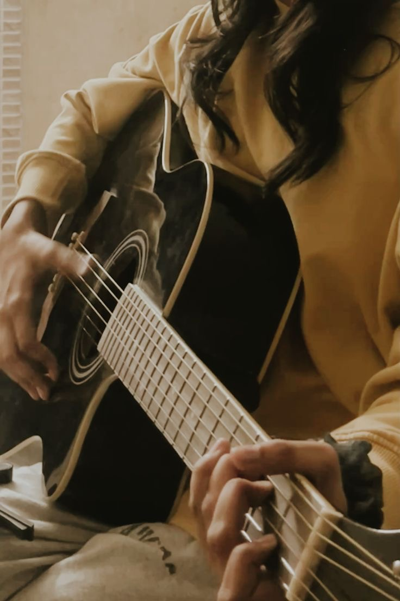
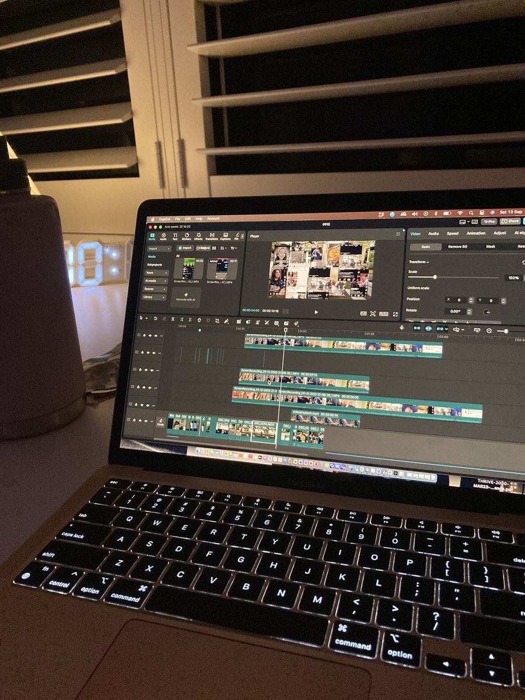

School
Knowledgeum Academy
International Baccalaureate Diploma Programme
A little introduction to
Making peace with uncertainty, finding beauty in possibility.
01 / The person behind the page
Hi, I'm Gouri!
I'm a creatively driven and curious individual interested in the worlds of art, design and entrepreneurship. I enjoy exploring new ideas, experimenting with different interests and turning inspiration into something meaningful.
I believe in originality, creative freedom and never limiting myself to just one path. I'm drawn to experiences that let me learn, create, collaborate and look at things from a different perspective.
Business, technology & creativity.
A collection of my academic journey, projects, experiences and interests.02 / Learning & growing
School
International Baccalaureate Diploma Programme
Undergraduate
BBA in Digital Business and Entrepreneurship
03 / Things I've been part of
Co-founder & Business Lead
Co-founded a youth-led initiative conducting workshops for underprivileged students. The workshops introduce basic business thinking, build confidence and connect classroom ideas with real-world awareness.
School leadership
Served as Cultural Captain contributing in activities and cultural initiatives.
Community volunteering
Volunteered as part of a hepatitis screening initiative, supporting a community health activity.
Sports
Represented the school in cricket and hockey, learning teamwork, discipline and commitment through sport.
04 / Ideas into action
A youth-led initiative using interactive workshops to introduce business thinking, confidence and real-world awareness to students from underserved communities.
Community · Education · BusinessA web-based tracker for a fictional biodegradable packaging startup. Built using PHP, MySQL, HTML and CSS, with features for recording emissions, setting goals and viewing progress.
Web development · SustainabilityA mathematics investigation exploring the relationship between female literacy rates and fertility rates across Indian states using statistical methods and data visualisation.
Research · Statistics · DataExploring consumer behaviour, marketing, entrepreneurship and the ways creativity can shape how people connect with ideas and brands.
Business · Marketing · Creativity05 / Moments worth keeping
Participated in creating a 78-foot Indian flag using newspapers for Independence Day 2024.
Participated in the 2025 commerce case competition.
Recognised with the Best Student of the Year award.
Received a school scholarship of ₹40,000.
Completed Prarambhik-level examinations in Bharatanatyam and Hindustani vocal music.
Represented the school in cricket and hockey; the hockey team finished as runners-up.
06 / What I bring
07 / Outside the usual
08 / Beyond the classroom




09 / Let's connect
I'm always happy to connect, exchange ideas and discover something new. Feel free to reach out!
gourivadiraj22@gmail.com ↗